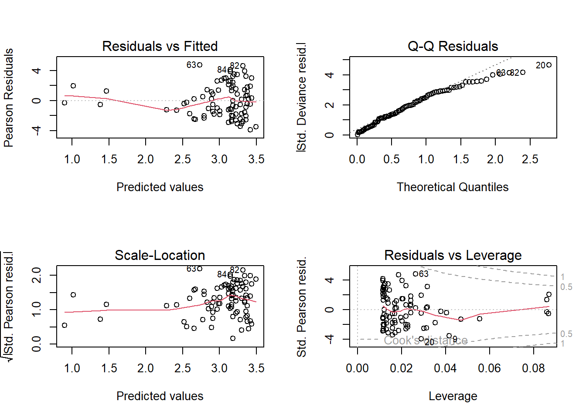
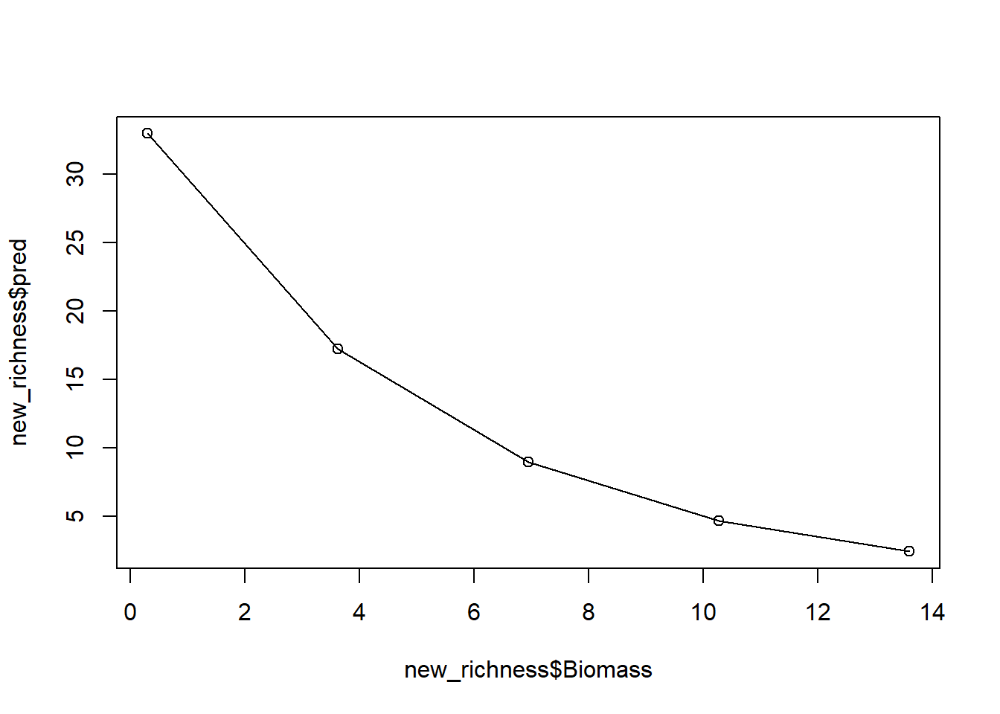
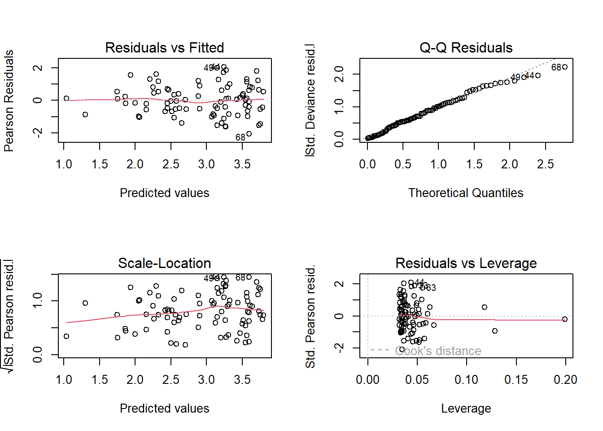
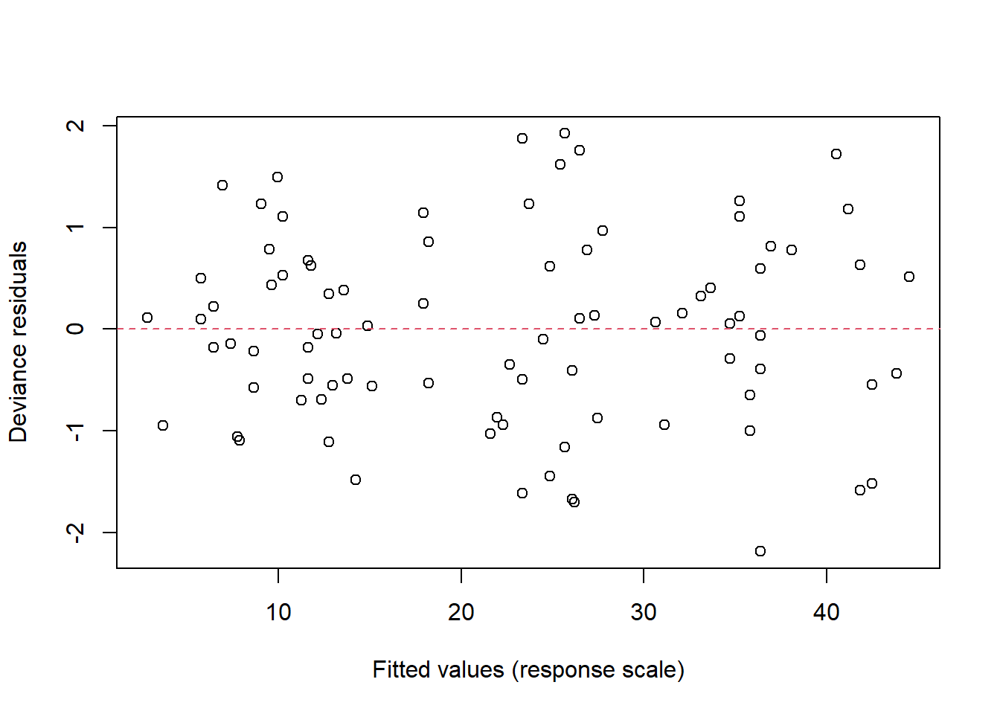
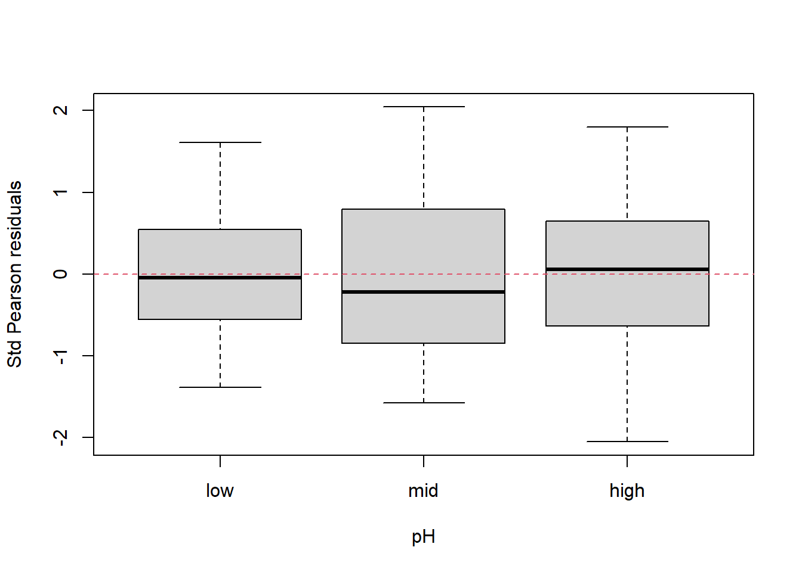
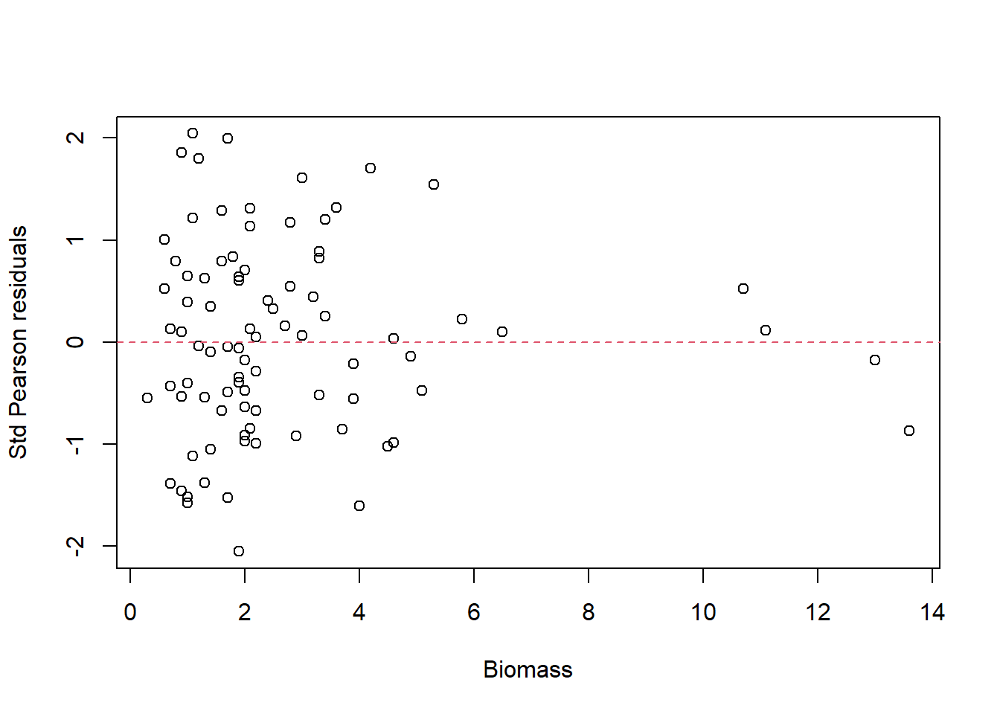
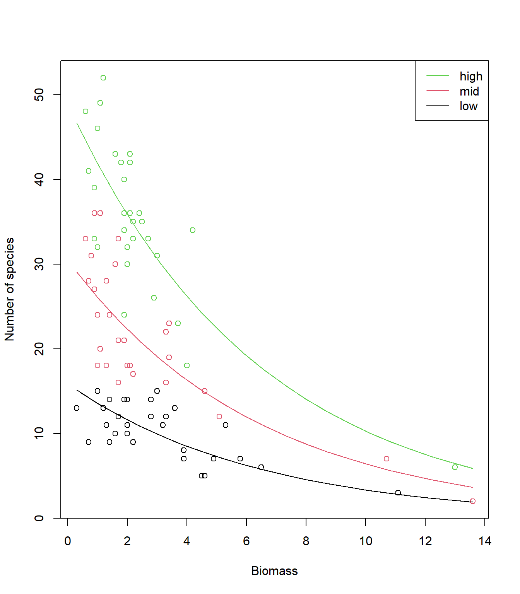

Exercise
Exercise: Poisson GLM - predicting species richness
For the GLM exercises, we’ll use the workflow suggested in the first GLM overview lecture as a template, specifically:
Know your research question!
Think about your response variable (stochastic).
Think about the process behind the data (deterministic).
Understand the data that you’ve collected (plot it!)
Combine into a model that can answer your question.
Fit the model.
Check your assumption(s).
Answer your question.
1. Know your research question!
The researchers who collected this data wanted to describe the
relationships between the number of species (Species)
present in a plot of land, and how this number was associated with the
overall plant biomass (Biomass, i.e. what was the overall
weight of plants in the plot of land), and the pH of the soil
(pH, categorised into “High”, “Medium” and “Low”). The
researchers were interested in merely describing the relationships
between species and the two explanatory variables. In total, the
researchers collected data from 90 plots of land (\(n = 90\)), where each observation is from a
single plot.
As concisely as possible, write down the research question we want to answer with our analysis.
2. Think about your response variable (stochastic).
From the information provided in the brief above, we are already able
to determine a suitable distribution to use when fitting the model (the
fact that this practical is called Poisson GLM may also offer a rather
cryptic hint…). The relevant information comes from the description of
Species clearly indicating that this variable is a count,
which implies 1) the minimum value is 0 [we cannot have -1 species], and
2) the response variable will be measured in integers [we cannot count
3.14 plants]. With this information alone, we can already deduce the
stochastic element of our model (i.e. the error) should be
adequately described by specifying a \(Poisson\) distribution.
3. Think about the process behind the data (deterministic).
Spare a moment’s thought to how complex the process behind the number of plant species present in a plot of land will be. How much sunlight does each plot get? How much rainfall? What seeds were already present in the soil before data collection started? Why were those seeds present and not others? Why did some of them germinate in time for us to count them? The list goes on.
For our purposes, the only explanatory variables we have available to us are plant biomass and soil pH. Clearly we won’t be explaining the intricacies of plant species richness, but that isn’t our aim. Instead, we’re simply trying to understand two parts (association with biomass and pH) of this much larger process. It is worth noting though, that if we were to find our model does a poor job of explaining species richness, we probably shouldn’t be massively surprised. We have an enormously complex system which we are caricaturing with just two explanatory variables. However, that complexity doesn’t mean we’re doomed to fail - simple models often do an unreasonably good job at describing complex systems - it just means that we need to appreciate the world is more complex than our model is able to account for. In a sense, it’s that complexity that we’re tasking the \(Poisson\) distribution with capturing.
4. Understand the data that you’ve collected (plot it!)
We now get to the part where we’ll actually start using
R. A plea though - do not underestimate the value in taking
the time to think carefully about steps that do not require coding.
Spending the time thinking about those questions makes your life that
much easier. I’d estimate that for my own work, I spend at least 60% of
my time thinking before doing anything with data or R. It
really is that important.
4.1. Get R ready to go
As in previous exercises, either create a new R script (perhaps call
it GLM_Poisson) or continue with your previous R script in your RStudio
Project. Again, make sure you include any metadata you feel is
appropriate (title, description of task, date of creation etc) and don’t
forget to comment out your metadata with a # at the
beginning of the line.
4.2. Data exploration
Import the data file ‘species.txt’ into R and take a look at the
structure of this dataframe. Given you have never seen this data before,
it’s really important that you familiarise yourself with any nuances. To
help with this, carry out an initial data exploration (using any methods
you think will help you get a sense of the data,
e.g. plot(), pairs(), coplot(),
amongst many other options).
While doing this, ask yourself:
- Do any of the variables need to be adjusted? (e.g. are factors recognised as such?)
- Do any factors need to be “re-levelled”, such that it is read “Low”,
“Medium”High” (or any order we may prefer)?
- (Hint: check
?factorand look at thelevelsargument)
- (Hint: check
- Are there any relationships you can already see by eye alone?
- Are there any imbalances in any of the explanatory variables?
- Are there any observations that seem like they may be a data entry mistake?
If using pairs() to create a plot of the variables of
interest, rather than creating a plot with every single variable in our
dataset, we may prefer to restrict the plot to the variables we are
actually interested in (this is redundant for this dataset but it’s
worth keeping this trick in mind for larger datasets). An effective way
of doing this is to store the names of the variables of interest in a
vector VOI<- c("Var1", "Var2", ...) and then use the
list of variable names to subset the variables that get plotted
(e.g. pairs(Mydata[, VOI]))
#sp <- read.table(file= "./data/species.txt", header= TRUE)
seed <- 1988
set.seed(seed)
N <- 90
Biomass <- rlnorm(N, 0.7, 0.7)
hist(Biomass)
pH <- rep(c("low", "mid", "high"), each = 30)
df <- data.frame(Biomass, pH)
df$med <- ifelse(df$pH == "mid", 1, 0)
df$high <- ifelse(df$pH == "high", 1, 0)
# (Intercept) 2.71255
# Biomass -0.12756
# pHmid 0.69123
# pHhigh 1.13639
b0 <- 2.71255
b1 <- -0.12756
b2 <- 0.69123
b3 <- 1.13639
df$Species <- rpois(N, lambda = exp(b0 + b1 * df$Biomass + b2 * df$med + b3 * df$high))
sp <- df[,c("Species", "Biomass", "pH")]
# Check the structure of the data to see if we need to correct anything
str(sp)
## 'data.frame': 90 obs. of 3 variables:
## $ Species: int 9 10 15 9 7 8 7 6 13 14 ...
## $ Biomass: num 2.214 1.589 0.973 1.434 4.858 ...
## $ pH : chr "low" "low" "low" "low" ...
# Correct pH so it is read as a factor, reordered such that "low" is the reference level
sp$pH<- factor(sp$pH, levels = c("low", "mid", "high"))
# Get simple descriptives of the data (e.g. what is the range for each variable?)
summary(sp)
## Species Biomass pH
## Min. : 2.00 Min. : 0.2594 low :30
## 1st Qu.:12.00 1st Qu.: 1.3115 mid :30
## Median :18.50 Median : 2.0179 high:30
## Mean :22.34 Mean : 2.6864
## 3rd Qu.:33.00 3rd Qu.: 3.2794
## Max. :52.00 Max. :13.6019
# make a list of the variables of interest, for convenience:
VOI<- c("Species", "Biomass", "pH")
pairs(sp[, VOI])
# Negative relationship between Species and Biomass?
# Positive relationship between Species and pH?
# Biomass tends to increase with pH, which could generate
# some collinearity between these explanatory variables in a model.
# but still plenty of variation in Biomass within each pH,
# so hopefully this won't be an issue.
coplot(Species ~ Biomass | pH, data = sp)5. Combine into a model that can answer your question.
Having thought through the above details, it’s now time to bring that
information together into a single model. As a reminder, we want to
describe the associations between species richness and plant biomass,
and soil pH. Given this is the first practical session, we’ll break this
up for the sake of pedagogy. Let’s start with species richness explained
by biomass. Write the equation (not the R code) for this
model.
For example, an intercept-only \(Poisson\) GLM would be:
\[ y_i \sim Poisson(\lambda_i)\\ log(\lambda_i) = \beta_0 \]
where, \(y_i\) is the value of the response variable for the \(i^{th}\) observation (e.g. if \(i = 1\), then this indicates the first row of our dataset), assumed to follow a \(Poisson\) distribution with rate \(/lambda\), regressed on the \(log\) link as a function of an intercept (\(\beta_0\)) only.
6. Fit the model.
To warm up, we’ll start by running the version of the Poisson GLM
that you (hopefully) managed to write above, where we assume that the
number Species counted in a plot is a function of how much
Biomass there was.
Run the model now, using glm().
- Hints:
- We use
family =to specify the distribution in aglm()- “Family” is just an alternative way to refer to a distribution.
- What is the default link function used by Poisson GLMs?
- How do we specify it?
- Do we need to specify it?
- Use
?glmif you’re stuck, or ask for help.
- We use
7. Check your assumption(s).
Even though this isn’t our final model, it can still be worthwhile to check how well this model met the assumptions.
To do so, we can check the model diagnostic plots, as well as check for dispersion. Do so now.
For the diagnostic plots:
- Residuals vs Fitted
- What kind of pattern would we expect?
- Q-Q Residuals
- Are we expecting Normally distribted error with a Poisson distribution?
- Scale-Location
- What is the maximum \(\sqrt{|Std. PearsonResid|}\) we would be comfortable with?
- Residuals vs Leverage
- Are any observations having a strong influence on the model fit?

par(mfrow = c(1,1))
summary(sp.glm1)
##
## Call:
## glm(formula = Species ~ Biomass, family = poisson(link = "log"),
## data = sp)
##
## Coefficients:
## Estimate Std. Error z value Pr(>|z|)
## (Intercept) 3.55628 0.03942 90.2 <2e-16 ***
## Biomass -0.19598 0.01606 -12.2 <2e-16 ***
## ---
## Signif. codes: 0 '***' 0.001 '**' 0.01 '*' 0.05 '.' 0.1 ' ' 1
##
## (Dispersion parameter for poisson family taken to be 1)
##
## Null deviance: 645.45 on 89 degrees of freedom
## Residual deviance: 432.63 on 88 degrees of freedom
## AIC: 865.48
##
## Number of Fisher Scoring iterations: 4
# Model diagnostic plots:
# Residuals vs Fitted
# While we do expect some funelling with Poisson GLMs the amount that we're
# seeing here is concerning. We go from having relatively "little" variation
# when our predicted values (on the link scale) are small, to "lots" of variation
# when our predicted values are large, and most of this is happening between predicted
# values of 2.5 to 3.5 (so over a fairly small range of predicted values)
# This is would suggest we're not meeting the assumptions particularly well and
# is a good indication that we have overdispersion.
# Q-Q Residuals
# We completely ignore this figure for GLMs.
# Scale-Location
# Ideally, we want std pearson resids to be ca. < 3, so we're good there
# We also don't want to see any patterns (as for Resids vs Fitted) but we see the
# same rapid increase in variation once predicted values are above 2.5
# Residuals vs Leverage
# We're really only using this to check for values close to a Cook's distance of 1
# While we don't have any observations that are greater than 1, we have a handful
# that are getting uncomfortably close. While these values are fine, we're
# not exactly jumping for joy with these Cook's distances.
# Overall, the diagnostic plots don't look great. Not the worst, but we'd want something
# better.
# To do a quick and crude check for dispersion, we can use the information from summary()
# We take residual deviance and divide by the degrees of freedom, so for this model:
# 432.63/88 = 4.9!
# We have a whopping 4.9 overdispersion! My general rule of thumb is that I start getting
# concerned when dispersion is somewhere in the 1.5-1.8 region. 4.9 is doomsday!
# As a result, our standard error for our parameter estimates is going to be artificially
# small. This in turn leads to both 1) risks of our p value being smaller than it should be
# for Biomass, and 2) any predictions that include uncertainty being too confident.8. Answer your question
Hopefully you identified issues that mean we should be very cautious with interpreting this simple version of the model. For now, we’ll put these concerns to rest, and use this model as an opportunity to practice making predictions (and therefore answering our research question).
8.1. Go back to your equation that you wrote for question 5. Using
summary(), replace the place-holder letters (e.g. \(\beta_0\)) with the estimated values from
your model. Using this updated equation, make the following
predictions:
On the link scale, how many plants would you predict if a plot had 0 kg of biomass?
On the link scale, how many plants would you predict if a plot had 2.5 kg of biomass?
On the link scale, how many plants would you predict if a plot had 5 kg of biomass?
# On the link scale, how many plants would you predict if a plot had 0 kg of biomass?
3.55628 + -0.19598 * 0 # = 3.55628
## [1] 3.55628
# On the link scale, how many plants would you predict if a plot had 2.5 kg of biomass?
3.55628 + -0.19598 * 2.5 # = 3.06633
## [1] 3.06633
# On the link scale, how many plants would you predict if a plot had 5 kg of biomass?
3.55628 + -0.19598 * 5 # = 2.57638
## [1] 2.576388.2. Now, let’s make predictions on the response scale. To go from
the \(log\) link scale, to the response
scale, we take our predictions and apply the inverse link function to
them. The inverse link function of \(log\) is \(e\) (or exponential, or
exp()). Predict, on the response scale, how many plant
species we would observe if:
On the response scale, how many plants would you predict if a plot had 0 kg of biomass?
On the response scale, how many plants would you predict if a plot had 5 kg of biomass?
On the response scale, how many plants would you predict if a plot had 10 kg of biomass?
# On the response scale, how many plants would you predict if a plot had 0 kg of biomass?
exp(3.55628 + -0.19598 * 0) # = 35.0
## [1] 35.03263
# On the response scale, how many plants would you predict if a plot had 5 kg of biomass?
exp(3.55628 + -0.19598 * 5) # = 13.1
## [1] 13.14945
# On the response scale, how many plants would you predict if a plot had 10 kg of biomass?
exp(3.55628 + -0.19598 * 10) # = 4.9
## [1] 4.9356288.3. Using this approach, we get a series of snapshot predictions.
That’s useful in and of itself, but we can make this a bit easier
visually. To do so, rather copy-and-pasting our equation and
substituting in different value of biomass, why not use R
to make this a bit easier for us. Begin by using seq() to
create a sequence of 5 biomass values that range from the minimum we
observed in the data, to the maximum, and store this variable.
Hint: do not add this new biomass variable to your original dataset.
biomass_new <- seq(from = min(sp$Biomass), to = max(sp$Biomass), length.out = 5)
biomass_new
## [1] 0.2593796 3.5950203 6.9306610 10.2663016 13.60194238.4. Once you have this variable (or “vector”), use it to make 5 simultaneous predictions of how many plant species we would expect to find, on the response scale. Store the output in another variable.
8.5. With both of these new variables, create a plot to show our prediction.

And with that, we have a prediction (from our model which we know has issues). If we stopped here, we’d conclude that biomass has a negative association with the number of plant species.
8.6. (Optional): The figure we have produced is pretty jagged looking. If we wanted a smoother line to be drawn, how would we do so?
# We would simply increase the number of biomass values that our seq() code created. Try it out if you're interested.
9. We’ve run a Poisson GLM where Species is explained by
Biomass, but remember that our initial research question
sought to describe the relationships between Species with
both Biomass and pH. Before running this
model, try to write down the equation for this new version of the model.
Keep in mind that pH is a categorical variable, meaning
we’ll need additional covariates to indicate if an observation is,
e.g. “Medium” pH (1) or not (0), or “High” pH (1) or not (0). (If you’re
not sure how to do this, you can either go back and watch the relevant
sections of the Poisson lecture or ask for help).
# y_i ~ Poisson(lambda_i)
# log(lambda_i) = beta_0 + beta_1 * biomass + beta_2 * pHmid + beta_3 * pHhigh
# Remember that for models with categorical variables, models will break that single
# categorical column into however many levels there are minus 1. Here 2 columns
# are "created" that are used to indicate if an observation is "mid" pH (1 if yes, 0
# if no), and another to indicate if an observation is "high" pH
# We don't need to column for "low", because if both "mid" and "high" are 0, then
# the only option is that it *must* be "low"9.1. Once you’ve given that a shot, run the glm() which
includes both Biomass and pH as main effects
only (we won’t be doing any interactions yet).
10. With every model we run, we need to re-diagnose the models. We’ve already done that once, so let’s quickly do it again.
For the diagnostic plots:
- Residuals vs Fitted
- What kind of pattern would we expect?
- Q-Q Residuals
- Are we expecting Normally distribted error with a Poisson distribution?
- Scale-Location
- What is the maximum \(\sqrt{|Std. PearsonResid|}\) we would be comfortable with?
- Residuals vs Leverage
- Are any observations having a strong influence on the model fit?

par(mfrow = c(1,1))
summary(sp.glm2)
##
## Call:
## glm(formula = Species ~ Biomass + pH, family = poisson(link = "log"),
## data = sp)
##
## Coefficients:
## Estimate Std. Error z value Pr(>|z|)
## (Intercept) 2.76461 0.06894 40.104 <2e-16 ***
## Biomass -0.15618 0.01567 -9.968 <2e-16 ***
## pHmid 0.65269 0.06965 9.371 <2e-16 ***
## pHhigh 1.12563 0.06516 17.274 <2e-16 ***
## ---
## Signif. codes: 0 '***' 0.001 '**' 0.01 '*' 0.05 '.' 0.1 ' ' 1
##
## (Dispersion parameter for poisson family taken to be 1)
##
## Null deviance: 645.453 on 89 degrees of freedom
## Residual deviance: 77.128 on 86 degrees of freedom
## AIC: 513.98
##
## Number of Fisher Scoring iterations: 4
# Model diagnostic plots:
# Residuals versus Fitted
# While we do still see a little bit of a funnel, we expect some
# given that the variation (y-axis) increases as the mean (x-axis) increases
# with the Poisson distribution
# This plot for the new model is a pretty ideal
# Q-Q Residuals
# We completely ignore this figure (despite it looking nice in this model)
# Scale-Location
# Ideally, we want std pearson resids to be ca. < 3, so we're good there
# We also don't want to see any patterns, so good here too
# Residuals vs Leverage
# We're really only using this to check for values close to a Cook's distance of 1
# We can't even see the dashed lines showing a Cook's distance of 0.5, so we're
# golden here too
# Overall, the diagnostic plots look great
# To do a quick and crude check for dispersion, we can use the information from summary()
# We take residual deviance and devide by the degrees of freedom, so for this model:
# 77.128/86 = 0.9
# Not exactly the ideal value of 1 but 0.9 is nothing to get concerned about
# Also, remember that *underdispersion* is generally not much of an issue
# Compared to the first model, this is a fantastic improvement11. (Optional): Obtain and compare summaries of the model output
using the summary() and the ANOVA of the model.
- Which of the
drop1()oranova()functions would you choose to use if you wanted to- look at deviance components?
- explain the predictions?
- test hypotheses?
- carry out variable selection?
anova(sp.glm2, test= "Chisq")
## Analysis of Deviance Table
##
## Model: poisson, link: log
##
## Response: Species
##
## Terms added sequentially (first to last)
##
##
## Df Deviance Resid. Df Resid. Dev Pr(>Chi)
## NULL 89 645.45
## Biomass 1 212.83 88 432.63 < 2.2e-16 ***
## pH 2 355.50 86 77.13 < 2.2e-16 ***
## ---
## Signif. codes: 0 '***' 0.001 '**' 0.01 '*' 0.05 '.' 0.1 ' ' 1
# DEVIANCE COMPONENTS:
# anova is useful for getting an idea of the relative contributions
# of each term to explaining the overall variability in the data,
# using the deviance. Beware that order does matter for all but the last term!
summary(sp.glm2)
##
## Call:
## glm(formula = Species ~ Biomass + pH, family = poisson(link = "log"),
## data = sp)
##
## Coefficients:
## Estimate Std. Error z value Pr(>|z|)
## (Intercept) 2.76461 0.06894 40.104 <2e-16 ***
## Biomass -0.15618 0.01567 -9.968 <2e-16 ***
## pHmid 0.65269 0.06965 9.371 <2e-16 ***
## pHhigh 1.12563 0.06516 17.274 <2e-16 ***
## ---
## Signif. codes: 0 '***' 0.001 '**' 0.01 '*' 0.05 '.' 0.1 ' ' 1
##
## (Dispersion parameter for poisson family taken to be 1)
##
## Null deviance: 645.453 on 89 degrees of freedom
## Residual deviance: 77.128 on 86 degrees of freedom
## AIC: 513.98
##
## Number of Fisher Scoring iterations: 4
# EXPLAINING PREDICTIONS:
# to explain patterns in the data, we need to look at the coefficient
# estimates from the summary of the model.
# TESTING HYPOTHESES:
# To test hyoptheses on the coefficient value being different from zero,
# look at the Z-test in the summary table
# To test hyoptheses on a predictor explaining a significant porportion of
# variation in the data, look at the Chi-sq-test in the anova table
drop1(sp.glm2)
## Single term deletions
##
## Model:
## Species ~ Biomass + pH
## Df Deviance AIC
## <none> 77.13 513.98
## Biomass 1 217.36 652.22
## pH 2 432.63 865.48
# VARIABLE SELECTION (SIMPLIFICATION):
# If we wanted to perform variable selection, we could use AIC to find
# any variables that we could drop from the model, without it loosing
# predictive power. In this example, the lowest AIC (the one with the best
# predictive power) is the full model (i.e. the one where we do not remove
# any variables)
12. Now that we’ve fit the full model, let’s begin the process of
interpreting what the results mean. For starters, given this is a more
complex model, let’s take it slowly and make sure we understand what
each parameter estimate means. Using summary(), identify
what each parameter means.
summary(sp.glm2)
##
## Call:
## glm(formula = Species ~ Biomass + pH, family = poisson(link = "log"),
## data = sp)
##
## Coefficients:
## Estimate Std. Error z value Pr(>|z|)
## (Intercept) 2.76461 0.06894 40.104 <2e-16 ***
## Biomass -0.15618 0.01567 -9.968 <2e-16 ***
## pHmid 0.65269 0.06965 9.371 <2e-16 ***
## pHhigh 1.12563 0.06516 17.274 <2e-16 ***
## ---
## Signif. codes: 0 '***' 0.001 '**' 0.01 '*' 0.05 '.' 0.1 ' ' 1
##
## (Dispersion parameter for poisson family taken to be 1)
##
## Null deviance: 645.453 on 89 degrees of freedom
## Residual deviance: 77.128 on 86 degrees of freedom
## AIC: 513.98
##
## Number of Fisher Scoring iterations: 4
# "(Intercept)" is the predicted value on the link (log) scale when
# pH is "low". A hint is that there is no labelled coefficient called
# "pHlow".
# "Biomass" is the slope of Biomass.
# It is negative, so assumes a linear decrease (on the log scale)
# For every extra 1 unit (here kg) of biomass "added" to a plot
# the number of species (on the log scale) decreases by -0.16
# "pHmid" is the estimated difference (on the log scale) between
# the "pHmid" and the reference level, "pHlow".
# A value of 0.65 means plots with "mid" pH have 0.65 (on link scale)
# more species than "low" (our intercept).
# "pHhigh" is the estimated difference (on the log scale) between
# the "pHhigh" and the reference level, "pHlow".
# A value of 1.13 means plots with "mid" pH have 1.13 (on link scale)
# more species than "low" (our intercept).
# A mathematical description of the model
# (and how I would present it in the methods section of a paper):
# Species_i ~ Poisson(lambda_i)
# log(lambda_i) = 2.76 + -0.16 * Biomass_i
# + 0.65 * pHmid_i
# + 1.13 * pHhigh_i
# we can produce more residual plots if desired:
# extract various residuals and plot
res.p <- resid(sp.glm2, type = "pearson")
res.d <- resid(sp.glm2, type = "deviance")
fit <- fitted(sp.glm2) # on the response scale
plot(res.p, res.d); abline(0,1) # deviance against Std Pearson residuals# quite similar in this model (no overdispersion, moderate underdispersion)
plot(fit, res.d, ylab= "Deviance residuals", xlab= "Fitted values (response scale)")
abline(h= 0, col= 2, lty= 2)
# residuals against the predictors:
plot(sp$pH, res.p, ylab= "Std Pearson residuals", xlab= "pH")
abline(h= 0, col= 2, lty= 2)
# low pH plots are more variable
plot(sp$Biomass, res.p, ylab= "Std Pearson residuals", xlab= "Biomass")
abline(h= 0, col= 2, lty= 2)
# Species richness over-predicted for highest and lowest Biomass plots
# Few cases: could be by chance?
Biomass.seq1<- seq(from= min(sp$Biomass[sp$pH== "low"]),
to= max(sp$Biomass[sp$pH== "low"]),
l= 25)
Biomass.seq2<- seq(from= min(sp$Biomass[sp$pH== "mid"]),
to= max(sp$Biomass[sp$pH== "mid"]),
l= 25)
Biomass.seq3<- seq(from= min(sp$Biomass[sp$pH== "high"]),
to= max(sp$Biomass[sp$pH== "high"]),
l= 25)
# predict for a range of biomass values and a low pH
MyData1<- data.frame(Biomass= Biomass.seq1, pH= "low")
# predict for a range of biomass values and a mid pH
MyData2<- data.frame(Biomass= Biomass.seq2, pH= "mid")
# predict for a range of biomass values and a high pH
MyData3<- data.frame(Biomass= Biomass.seq3, pH= "high")
P.low<- predict(sp.glm2, newdata= MyData1, type= "link")
P.mid<- predict(sp.glm2, newdata= MyData2, type= "link")
P.high<- predict(sp.glm2, newdata= MyData3, type= "link")
plot(sp$Biomass, sp$Species, col= sp$pH, xlab= "Biomass", ylab= "Number of species")
lines(MyData1$Biomass, P.low, lty= 1, col= 1)
lines(MyData2$Biomass, P.mid, lty= 1, col= 2)
lines(MyData3$Biomass, P.high, lty= 1, col= 3)
# lines are straight and appear in the wrong place!
# Because they are on the link scale (observations are on the response scale)
# Now, re-plot after back-transforming the predictions to make them on the response scale
plot(sp$Biomass, sp$Species, col= sp$pH, xlab= "Biomass", ylab= "Number of species")
# (note the 'exp')
lines(MyData1$Biomass, exp(P.low ), lty= 1, col= 1)
lines(MyData2$Biomass, exp(P.mid ), lty= 1, col= 2)
lines(MyData3$Biomass, exp(P.high), lty= 1, col= 3)
# Better?
legend("topright",
legend= c("high", "mid", "low"),
col= c(3:1),
lty= c(1, 1, 1),
lwd= c(1, 1, 1))
End of the Poisson GLM - predicting species richness exercise